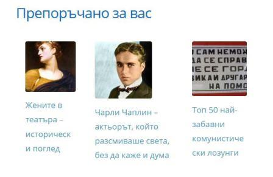
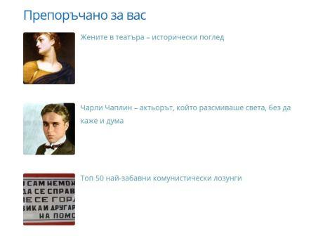

Display Related Posts With Thumbnails in WordPress Without a Pugin
In this tutorial I am going to show you how to display related posts from the same category as the single post page in WordPress. Without the use of any plugins. The related posts are a great way to improve your website conversions (the time that your visitors spend on the website) and improve Google’s search rankings. In the past, I was using Yuzo Related Posts plugin. However, in the beginning of 2019, there was a vulnerability issue and it is no longer supported by the WordPress community. So, more than 60 000 WordPress users, including myself, had to find another way to show related posts on our websites and in this way engage more our readers. Finally, I came up with a neat solution that actually does not require installation of extra plugins waiting to get hacked. By the end of this tutorial you should be able to display related posts section without a plugin:

Enough talking, let’s write some code!
Display Related Posts section with posts from the same category
Open your child theme’s functions.php and paste the following function:
<?php
/* Show related posts */
function show_related_posts_by_category {
$cats = get_the_category();
$args = array(
'post_type' => 'post',
'post__not_in' => array( get_the_ID() ),
'posts_per_page' => 3,
'cat' => $cats[0]->term_id,
);
$query = new WP_Query( $args );
?>
<div class="related-posts">
<h1>Препоръчано за вас</h1>
<ul>
<?php if( $query->have_posts() ) : while( $query->have_posts() ) : $query->the_post(); ?>
<li>
<a href="<?php the_permalink(); ?>">
<?php if ( has_post_thumbnail() ) { /* Display the post's featured image */
the_post_thumbnail('thumbnail');
} else { /* Display default image if no featured image is included */ ?>
<img src="<?php bloginfo('template_directory'); ?>/../../../wp-content/uploads/2018/05/default-image" alt="<?php the_title(); ?>" />
<?php } ?>
<?php the_title(); /* Display the post's title */ ?>
</a>
</li>
<?php endwhile; endif; wp_reset_postdata(); ?>
<ul>
</div> <?php
}
<?php show_related_posts_by_category() ?>
Style the Related Posts in One Column Layout
Now, when you refresh your blog post, you should be able to see a list of posts from the same category (maximum 3). Great job! Now, all you need to do is to put some css to style it in a beautiful 1 column layout:
.related-posts ul {
list-style: none;
margin-left: 0;
margin-right: 0;
padding-left: 0;
padding-right: 0
}
.related-posts ul li {
overflow: hidden;
margin: 0 0 1.5em
}
.related-posts ul li:last-child {
margin: 0
}
.related-posts ul li img {
display: inline;
float: left;
margin: .3em .75em .75em 0;
width: 120px;
height: 120px;
}
This is how your related posts section should look like at this point:

Style the Related Posts in Three-Column Layout
If you want, you can turn this to a beautiful 3 column layout representation:
@media only screen and (min-width: 669px) {
.related-posts ul {
display: flex;
width: 100%;
}
.related-posts ul li {
padding: 20px;
}
}
It’s a kind of magic! You now finally have related posts that are likely to engage your visitors more and we even managed to do it without installing any additional plugins! Congratulations!
Read more: